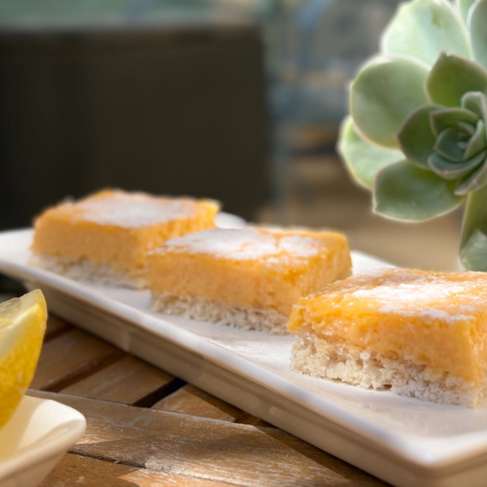

חיתוכיות קוקוס לימון רכות
טבלת ערכים תזונתיים בקירוב :
שימו לב שהערכים משתנים כתלות בממתיק, טבלה זו היא עבור מתכון עם סוויטאנגו
חתיכה (50 גרם):
| ערכים | חתיכה (50 גרם): מחלקים לכ-12 מנות גדולות מאוד | 100 גרם |
|---|---|---|
| קלוריות | 135.3 | 270.6 |
| פחמימות | 3.8 | 7.5 |
| חלבונים | 5.5 | 11 |
המתכון הזה מבוסס על המתכון לחיתוכיות קוקוס ולימון של אינס שילת ינאי מאתר "מקאו" -
לינק למתכון
יש מתכונים שמלווים אותנו שנים, והמתכון הזה הוא ללא ספק אחד מהם. בתקופה שבה שמרתי על תזונה קפדנית והדוקה במיוחד, סיגלתי לעצמי מנהג: פעם בשבוע בחרתי פינוק אחד ששווה את הכל. כשנתקלתי לראשונה במתכון של אינס שילת ינאי, ידעתי שמצאתי את ה-קינוח שלי.
מה ששבה אותי היה השילוב בין הטעם החלומי של פאי לימון לבין הקלות שבהכנה – בלי להתעסק עם בצק פריך מורכב, פשוט חיתוכיות מושלמות. למרות שלא אכלתי מתוקים כמעט בכלל באותה תקופה, מצאתי את עצמי מכינה את המתכון הזה שוב ושוב. הוא פשוט היה ממכר.
כשפתחתי את האתר, היה לי ברור שאני חייבת ליצור גרסה שתתכתב עם אורח החיים שלי של היום, כך שאוכל לאכול ממנה לא רק פעם בשבוע.
אז קבלו את אחד המתכונים האהובים עליי באתר זה ובכללי, חיתוכיות קוקוס ולימון פשוט מושלמות!

מתכון:
כמות: תבינת בגודל 18x26 (כ-12 חיתוכיות גדולות מאוד!)
אפשר גם להכין בתבנית קטנה יותר אם רוצים חיתוכיות גבוהות יותר
אפשר לחלק את המתכון בשליש בשביל מתכון אישי או לזוג, זה מתכון שמתאים בכמות לאירוח
מרכיבים:
תחתית הקוקוס:
60 גרם קוקוס טחון
24 גרם שמן קוקוס
טיפ: אם משתמשים בדבש כממתיק מומלץ להפחית את כמות השמן קוקוס ל20 גרם)
כפית תמצית וניל
3 חלבוני ביצה גודל L (תשמרו את החלמון לקרם הלימון)
40 גרם סוויטאנגו / 40 גרם דבש (שימו לב: דבש אינו מתאים לסוכרתיים ולקיטוגנים)
1/2 כפית חומץ או מיץ לימון
קורט מלח
קרם לימון:
3 חלמונים (שנותרו מתחתית הקוקוס)
6 ביצים
1 כוס נוזל- 2/3 כוס מיץ לימון ו- 1/3 כוס מים
אם משתמשים בדבש כממתיק שימו 3/4 כוס נוזל (כדי שהקרם לימון יוכל להתמצק).
אפשר לשחק עם היחסים אם אוהבים מאוד חמוץ או פחות חמוץ, זה יחס יחסית מאוזן בעניי.
80 גרם סווטאנגו / 90 גרם דבש
45 גרם חמאה חתוכה לקוביות / 45 גרם שמן קוקוס (אם רגישים ללקטוז)
הוראות הכנה:
תחתית קוקוס:
חממו מראש תנור ל-170 מעלות בתוכנית טורבו, רפדו תבנית בנייר אפייה (ללא נייר אפייה החיתוכיות יידבקו לתבנית!) ושמנו אותו היטב עם שמן קוקוס או חמאה.
ערבבו בקערה את הקוקוס הטחון עם שמן הקוקוס עד לאיחוד, והוסיפו פנימה את תמצית הווניל.
הקציפו בקערה נפרדת, נקייה ויבשה, את חלבוני הביצה יחד עם החומץ (או מיץ הלימון), הממתיק והמלח במהירות גבוהה מאוד, עד לקבלת מרנג לבן, יציב ומבריק.
העבירו את תערובת הקוקוס לקערת החלבונים וקפלו אותה פנימה בתנועות עדינות ואיטיות, עד לקבלת תערובת אחידה ותוך שמירה על האוויריות של הבלילה.
שפכו את בלילת הקוקוס לתבנית, שטחו לשכבה אחידה ואפו במשך כ-10 עד 15 דקות, עד שהבסיס מזהיב מעט בשוליים ובמרכז.
הוציאו את התבנית מהתנור אך השאירו אותו דולק להמשך האפייה.
קרם לימון:
טרפו היטב את הביצים בקערה גדולה.
חממו בסיר על להבה גבוהה את הנוזל (מיץ הלימון והמים) יחד עם הממתיק, עד לבעבוע קל (כמעט רתיחה).
בצעו "השוואת טמפרטורות": חשוב לעשות זאת בצורה איטית ותוך טירפה מתמדת כדי לא לבשל את הבצים! העבירו את נוזל הלימון החם לתערובת הביצים בצורה הדרגתית מאוד ותוך בחישה מתמדת בעזרת מטרפה. מומלץ למזוג בכל פעם כמות של מצקת בזרם דק, עד לסיום כל הכמות (סרטון המראה תהליך זה, בסוף המתכון).
החזירו את התערובת לסיר על אש בינונית ובשלו תוך ערבוב מתמיד (מומלץ לשלב בין מטרפה ללקקן כדי למנוע הידבקות לתחתית), עד שהבלילה מסמיכה (סרטון המראה מרקם בלילה, בסוף המתכון).
סננו את הקרם דרך מסננת לתוך קערה, הוסיפו פנימה את קוביות החמאה כשהתערובת עוד חמה, המתינו מספר דקות וערבבו עד לקבלת קרם חלק ואחיד.
שפכו את הקרם מעל בסיס הקוקוס האפוי, יישרו לגובה אחיד והחזירו לתנור לאפייה של כ-10 עד 15 דקות נוספות, עד שהחלק העליון נראה יציב.
סרטון מתהליך ההכנה:
לינק לסרטון קצר
סרטונים מתהליך ההכנה:
השוואת טמפרטורות: טכניקה למזיגת נוזל הלימון החם אל תערובת הביצים מבלי לבשל אותן
מרקם קרם הלימון לקראת סוף הבישול